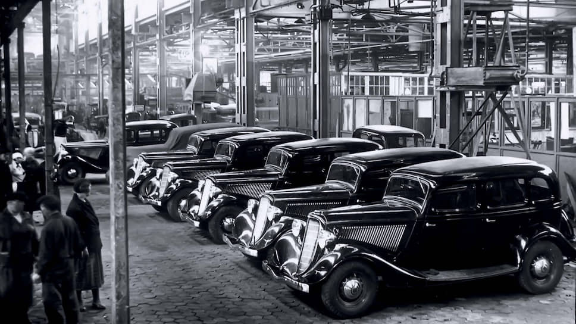
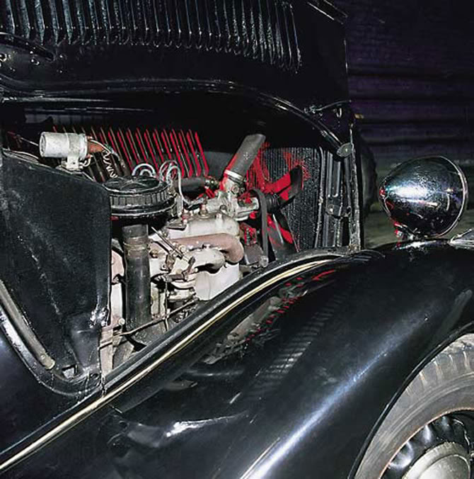

"Черный воронок" - так называли чисто черные ГАЗ М1 среди народа. Когда этот автомобиль появлялся в каком-то из дворов, то все старались закрыться в квартире и не выходить, настолько был велик страх от одного только вида автомобиля. И не зря - именно на них "изменщиков Родине" увозили в лагеря.
Отечественный легковой автомобиль массового выпуска – Газ М1 «Эмка».
Первые работы над созданием начались в 1933 году, и уже в январе 1934 года появились первые предсерийные образцы модели.
Госприёмку этот автомобиль прошел самую высшую. В марте 1936 года машину осмотрели Иосиф Сталин, Климент Ворошилов, Вячеслав Молотов и Григорий Орджоникидзе. Машина им понравилась.
В 1936 году началось серийное производство, «Эмка» заменила на конвейере модель А.
Всего в период с 1936 по 1942 годы было изготовлено 62 888 автомобилей.
ГАЗ М-1 это по истине символ 30-х годов. «Эмка» была прежде всего служебным автомобилем, на этой машине ездили передовики, деятели культуры, партийная номенклатура, директора заводов, военноначальники.

На заводе Газ «Эмку» считают первым советским автомобилем, что отражается даже в названии модели. М1 означает «Молотов-Первый», буква М – дань уважения к Вячеславу Молотову, председателю совета народных депутатов СССР в честь которого в то время назывался завод, а 1 – означает первый советский автомобиль.
Адаптацией к советским условиям эксплуатации занимался коллектив инженеров под руководством А. А. Липгарта.
Горьковскому заводу предстояло подготовить модель к производству, а также изготовить часть производственного оснащения самостоятельно.
Несмотря на относительно недолгий производственный срок, ГАЗ-М-1 стал главным автомобильным символом предвоенного СССР. С началом войны, в 1941 году производство автомобиля было завершено, однако еще год «эмки» собирались из задела запчастей. Всего было выпущено 62888 автомобилей.
По предвоенному штатному расписанию от 5 апреля 1941 года, в списочный состав транспорта полка входил один легковой автомобиль — это и был М-1.
Из удобств в автомобиле разве что передний диван с регулировкой вперед-назад, ветровое стекло, которое приподнимается для вентиляции, пепельница и прикуриватель.
Панель приборов ГАЗ-М1 выглядела по тем временам не только современной, но и элегантной.Общая стилистика панели «эмки» повторяла фордовскую, модели 1934 года. Но приборы на советской машине иные, без американских овальных элементов.
Обивка салона выполнена из шинельного сукна чаще всего серого или темно коричневого цвета. Отопителя в салоне не предусмотрено, поэтому зимой передвигаться на большие расстояния проблематично, хотя сукно все же помогает сохранять тепло в салоне.

На ГАЗе в то время не было возможности запустить и освоить производство мотора V8, поэтому на машины устанавливали более простой и дешевый 4 цилиндровый мотор.
Важно, что двигатель V8 не имел большого превосходства над 4 цилиндровым. Объем двигателя 3,6 и 3,5 литра, мощность 65 и 50 л.с соответственно. Поэтому принятое на ГАЗе решение – выпускать машину с более простым мотором вполне оправдано.
Газ М1 с двигателем V8 все же выпускался. Восьмицилиндровый двигатель устанавливали на машины для нужд НКВД.
Четырехцилиндровый двигатель Газ-А модернизировали по образу Model B. Оснастка для изготовления мотора была полностью советской.В отличии от Ford у которого двигатель был жестко закреплен на раме, советские инженеры разработали плавающую подвеску на резиновых подушках благодаря чему удалось существенно снизить передающуюся вибрацию.
В дальнейшем этот двигатель устанавливали на грузовики Газ-АА, ММ и их модификации.
 ГАЗ М-1
ГАЗ М-1